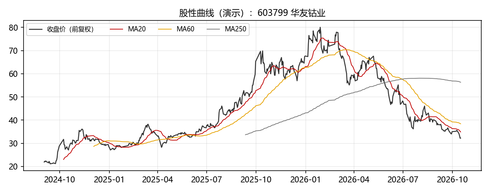
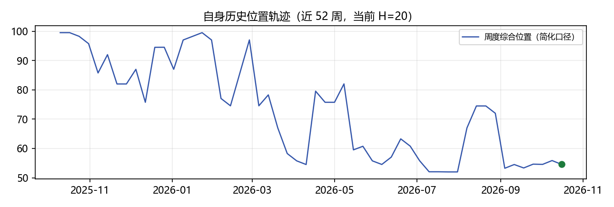
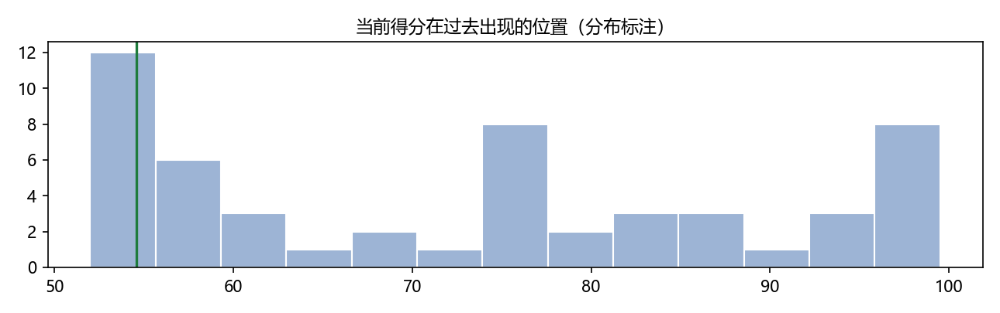
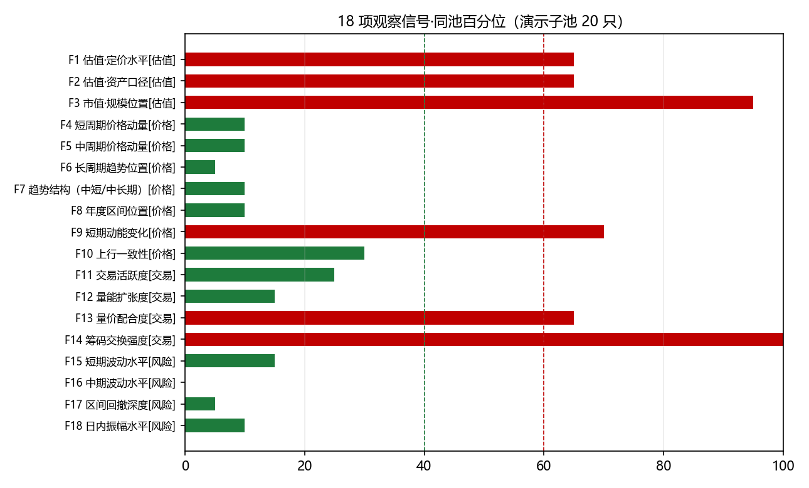

| 代码 | 603799 |
|---|---|
| 名称 | 华友钴业 |
| 观察日 | 2026-10-16 |
| 同池 | 演示子池（沪深300样本 20 只；正式版为四池归属） |
| 出分日 | 2026-10-16 |
| 建议复核日 | 2026-10-23 |
| 指标 | 分数 | 分档（>60 偏有利 / 40–60 中性 / <40 偏不利） |
|---|---|---|
| 综合分 S | 10 | 偏不利 |
| 历史位置 H（52 周） | 20 | 偏不利 |
| 侧面 | 观察项数 | 侧面均分 | 分档 |
|---|---|---|---|
| 估值特征 | 3 | 75 | 偏有利 |
| 价格行为 | 7 | 21 | 偏不利 |
| 交易行为 | 4 | 51 | 中性 |
| 风险特征 | 4 | 8 | 偏不利 |




分数为同池相对强弱的百分位打分（0–100），仅代表当前因子状态的相对位置，不代表概率、可能性或收益预期。高于 60 读取为偏有利信号，低于 40 读取为偏不利信号，40–60 为中性区。
① 用的数据：仅使用公开的日线级行情（开高低收、成交量额、振幅、换手率）与日线估值（市盈率、市净率、总市值），不使用分钟线与逐笔成交（口径见 BR-006/NG-006）。
② 用的分析工具：18 项观察信号（估值特征 3 / 价格行为 7 / 交易行为 4 / 风险特征 4），每项在演示同池内取平均并列名次百分位（0–100）。
③ 合成一个数：综合分 S = 18 项信号等权平均后，放回同池重新排名的百分位；H = 当前状态在此前 52 个完成周中的相对位置（本样张为简化演示口径）。
④ 是什么意思/不是什么意思：S 只描述该股当前因子状态在同池中的相对强弱，高于 60 偏有利、低于 40 偏不利、40–60 中性；它不代表上涨概率、收益预期，也不构成任何操作指令。
⑤ 什么时候会变：周频更新：每周收盘数据落地后重新计算即刷新；遇周涨跌幅绝对值≥5%、业绩预告/财报、成交结构异常，建议在复核日之前提前复核。
本报告为量化因子状态的客观描述工具。分数描述因子状态，不代表上涨概率、可能性或收益预期，亦不构成任何证券交易类操作建议或投资顾问服务。四个观察侧面仅用于拆解展示，不另设权重；风险维度得分高不等于绝对风险低。数据来自公开渠道，可能存在延迟或修正，请以交易所披露为准。
Spike-2 渲染管线验证产物 · 生成时间 2026-10-17 17:00 · 因子清单见 spec v1.3 附表 A（18 项，PM 审定冻结）